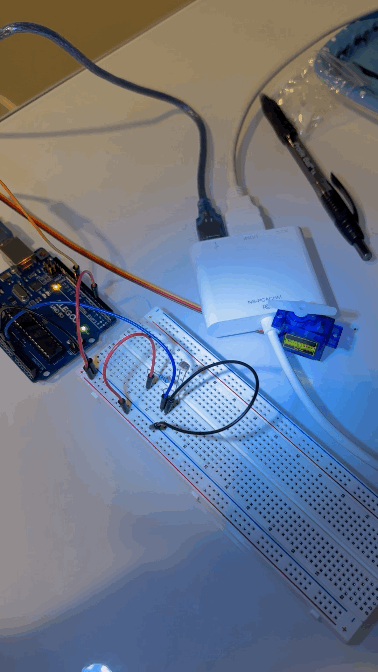
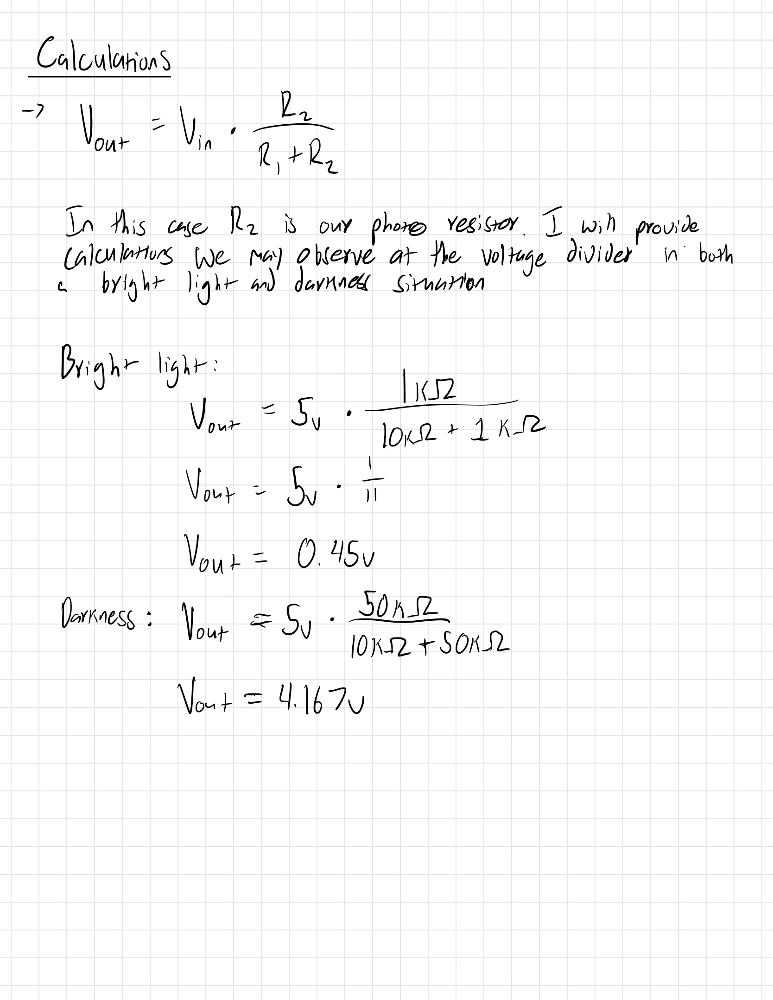
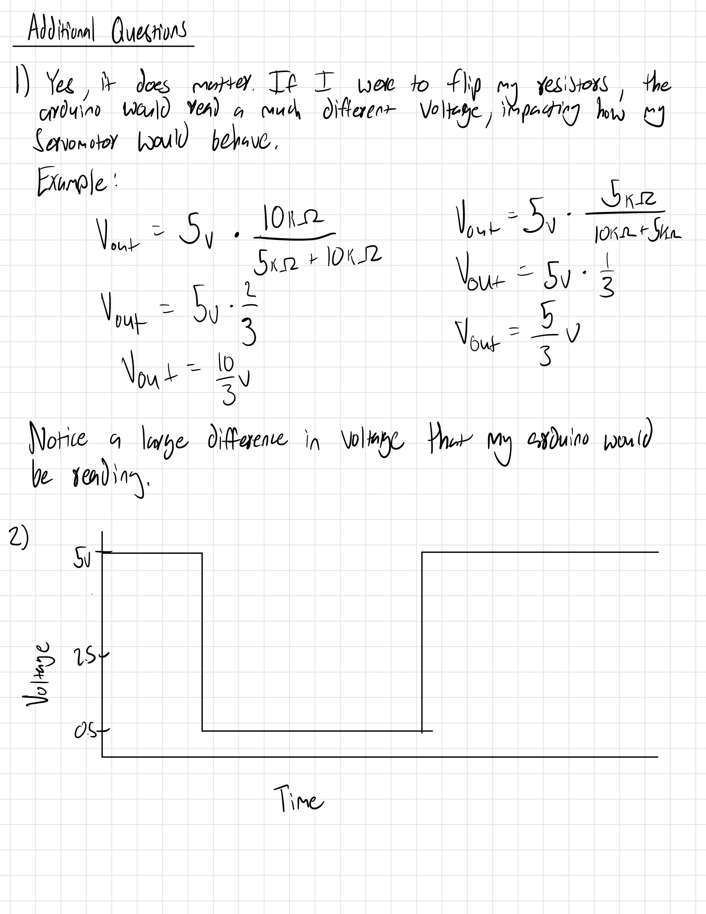
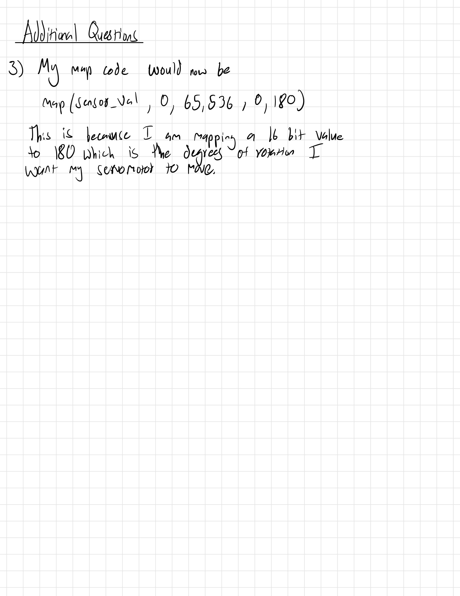
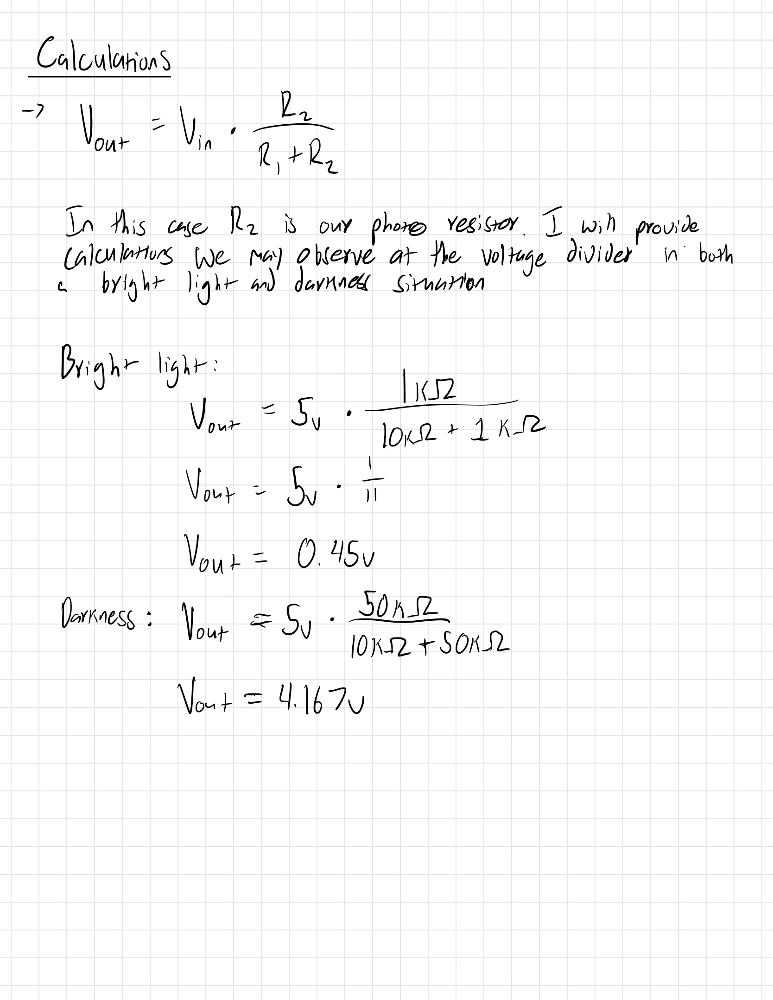
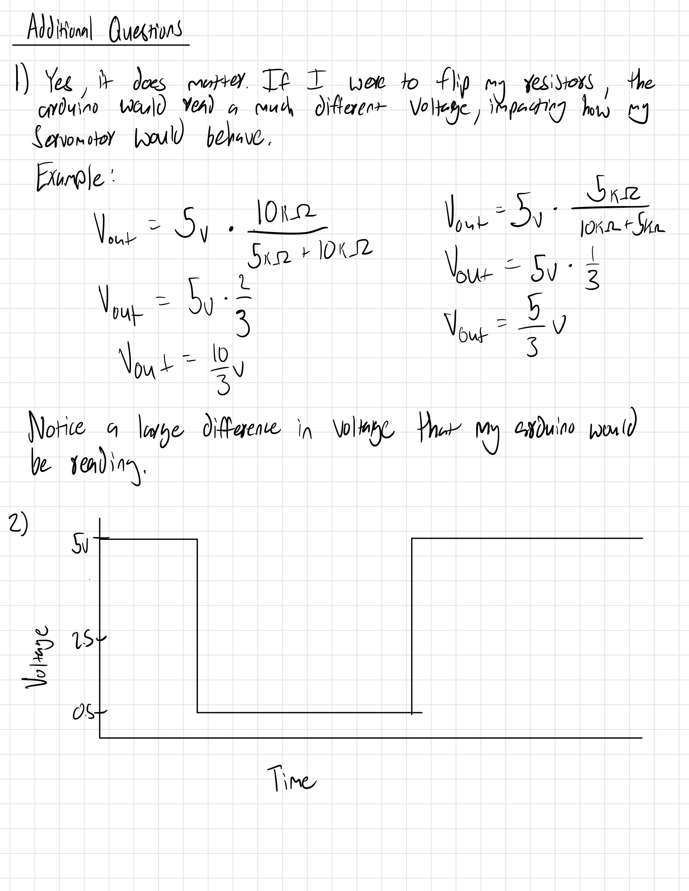
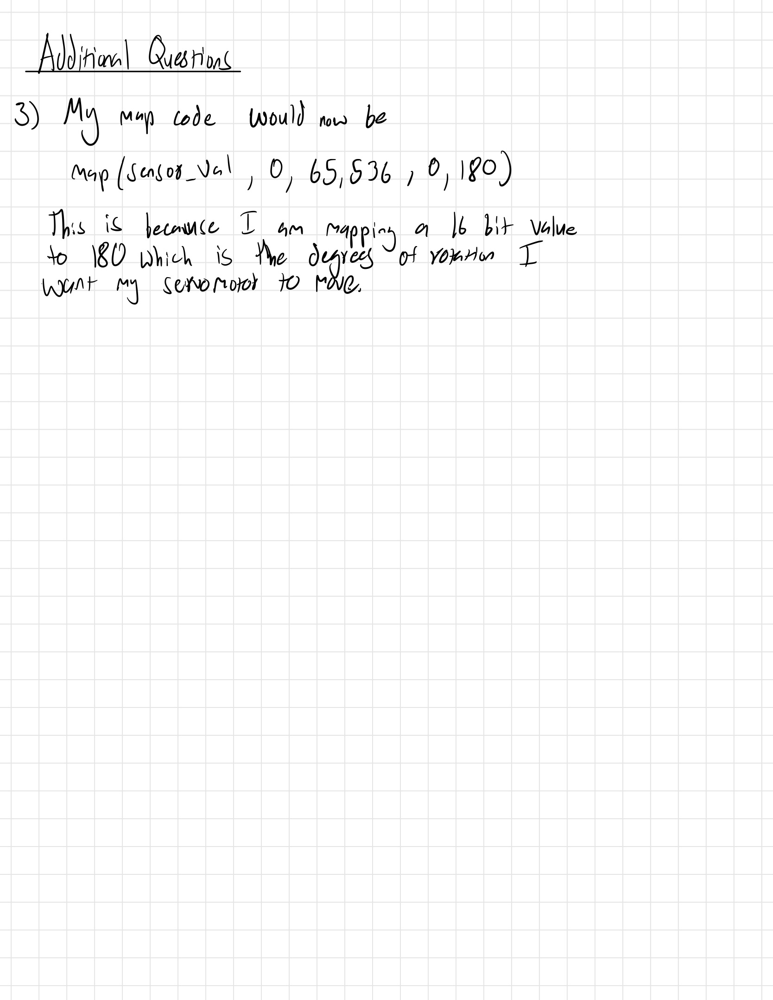

Keyvyn Rogers Assignment 2
// Utilized this article to learn how to control servo
// https://docs.arduino.cc/learn/electronics/servo-motors/
# include
//Creating servo object to control a servo
Servo myServo;
// intializing sensor pin
int sensor_pin = A0;
// creating sensor object for photoresistor
int sensor;
// Intializing servo position
int position = 0;
// Initializing servo controller pin
int servo = 9;
//Set up block
void setup() {
// Initalizing Pin 4 as Output
pinMode(4, OUTPUT);
// Attaching pin 9 to servo
myServo.attach(servo);
}
//The infinite loop
void loop() {
// Providing power to positive railing for photoresistor
digitalWrite(4, HIGH);
//Reads input from our voltage divider (photoresistor and fixed resistor)
int sensor_val = analogRead(sensor_pin);
//Mapping our sensor_val to new value (180)
//Mapping to 180 because servo motors rotate
// between 0 and 180 desgrees
int mapval = map(sensor_val, 0, 1023, 0, 180);
// If there is a decent amount of light then servo rotates forward
// Seems backwards but that is the way my circut is
if(mapval < 90){
//rotate from 0 to 90 degrees
for(position = 0; position <= 180; position +=1){
//Move motor
myServo.write(position);
//delay 10ms till move again
delay(10);
}
}
// Else part of conditional
else{
// rotate backwards
for(position = 180; position >= 0; position -=1){
//Move motor
myServo.write(position);
//delay 10ms till move again
delay(10);
}
}
}


 




